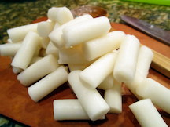
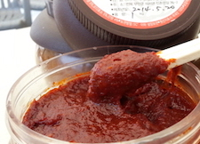

Ingredients Needed:
Steps
- Soak the rice cakes for about 20 minutes if hardened or refrigerated
- Cut the fish cake, cabbage, and onions into about 2-inch long pieces.
- Boil the anchovy broth or water in a large pan, mix in the gochujang and soy sauce, then stir to dissolve
- Add the rice cakes. Boil until rice cakes become very soft and the sauce has thickened, about 10 minutes
- Add the cabbage, garlic, onions, and fish cakes. Continue to boil, stirring constantly, for an additional 5 minutes
- Add more broth or water if needed. Taste the sauce, and adjust the seasoning if needed. Serve immediately.
- Once served, garnish with sesame seeds.
- Enjoy!